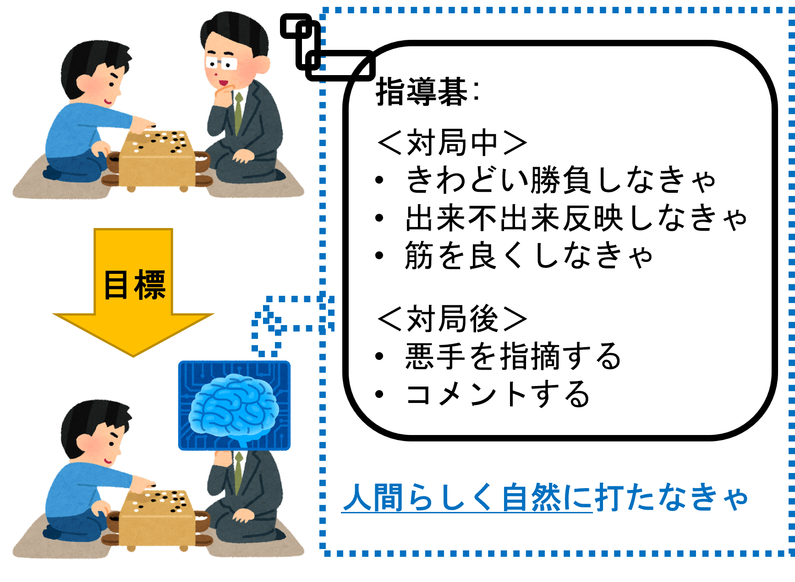
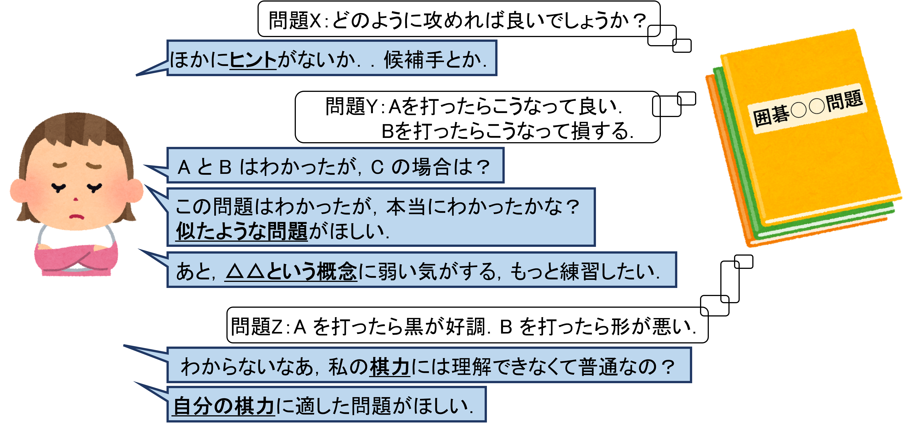

ゲームは古くから人間の娯楽の一環であり，AI 研究における重要な分野の １ つともされてきました．
多くのゲームにおいて AI プレイヤはトップの人間プレイヤを上回る強さを持つに至りました．
強力・汎用性の高いAI手法は盛んに研究されている一方で，Society 5.0 へ向かう社会のため，AI を人間の身近な存在とする研究も注目されています．
我々はゲームにおいてこの 2 つの AI 研究の方向に取り組んでいます．
※なお，ゲームを設計する研究は行っていません．
以下，2 つの方向性を簡単に紹介します．
詳細は発表論文を参照してください．
木探索や強化学習（特に AlphaZero）を用いて強い AI プレイヤを作る研究に取り組んでいます．
作った AI プレイヤはゲーム大会でいい成績を取れています．
また，単に強いだけではなく，最適戦略やゲームの理論値を求める研究（いわゆるゲームの解析）にも興味があります．
簡単な例を挙げると，三目並べにおいてプレイヤ両方が最善を尽くせば引き分けになるというものです．
囲碁において，人間教師の指導法の 1 つである「指導碁」（下図）を AI にやらせることを目指しています．
そのために，人間らしい着手を打つ研究と，いい対局を演出する研究と，悪手を指摘する研究に取り組んでいます．
局面や着手に対する解説やコメントの生成も目標の 1 つです．

ゲームにおけるコンテンツには，マップや音楽，キャラクタ，武器，パズル等さまざまなものが含まれます．
プレイして楽しい・プレイして勉強になるようなコンテンツの自動生成に取り組んでいます．
例えば，人間プレイヤを誘導する迷路の生成と，テトリスにおける T-spin という技術を練習するパズルの生成，囲碁初中級者向けの練習問題の生成（動機を下図に示す）が挙げられます．
